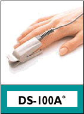
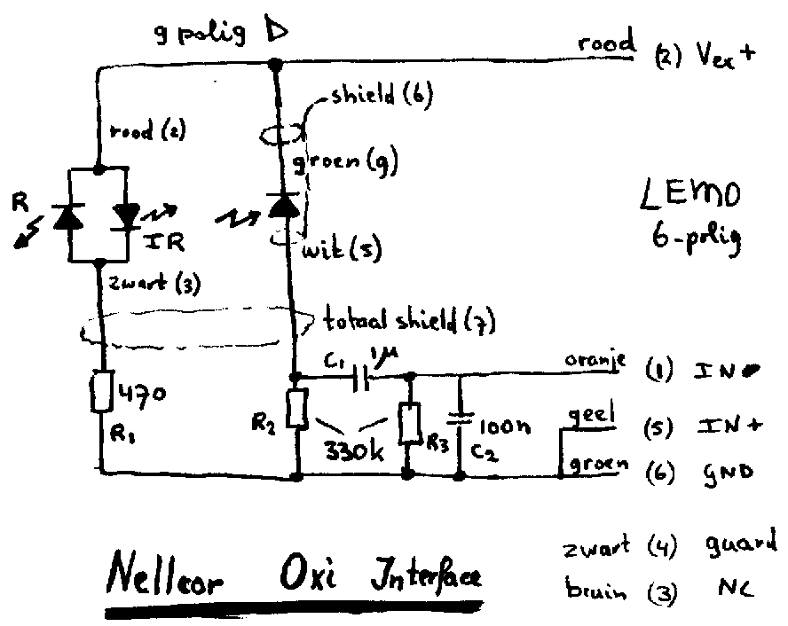

| Fysio Flex System |
|
Inleiding
Sensor Aansluiting Interface |
| Nellcor Oxi Sensor Interface |
| De Nellcor Puls-Oxi sensors kunnen via
een eenvoudig interface kabeltje worden aangesloten op het Fysio Flex System,
met als doel het meten van de hartslag.
Omdat slechts één van de golflengte van de Puls-Oxi sensor wordt gebruikt kan niet de Oxigenatie (SpO2) worden gemeten. In de toekomst is het misschien mogelijk via een software functie de respiratie te meten. Voor experimentele studies kan het gewenst zijn de gehele polsgolf in ogenschouw te nemen. |
 |
| De nellcor puls-oxi sensors
bevatten een rode en een infrarode led (golflengten ...???), anti-parallel
geschakeld tussen de pennen 2 en 3.
De detectie gebeurt met een photodiode (helaas daglicht gevoelig), tussen de pennen 5 en 9, en afzonderlijk afgeschermd door pen 6. De gehele kabel is nogeens afgeschernd via pen 7. Hiernaast de aansluit gegevens van de 9-polige
D-connector nog eens op een rij, tussen haakjes de kleur van de aansluitdraden
in de sensor.
De verschillende uitvoeringsvormen van de sensor zijn te vinden in het overzicht (pdf-format). |
1 = not connected |
| 2 = anode IR-led, kathode R-led
(rood) |
|
| 3 = cathode IR-led, anode R-led
(zwart) |
|
| 4 = pen niet aanwezig | |
| 5 = anode van photo-diode
(wit) |
|
| 6 = shield van photo-diode | |
| 7 = total shield | |
| 8 = pen niet aanwezig | |
| 9 = cathode van photo-diode
(groen) |
Interface
schema 
Als transmitter is de Infra-Red led gekozen,
vanwege het grotere uitgangssignaal (in het infrarood werken namelijk volume
en HbO2 versterkend). De stroom is empirisch bepaald op 4 mA, bij grotere
stromen kan men de ontwikkelde warmte voelen. De spanningsval over de IR-led
bedraagt ongeveer 1V2, dus voor R1 geldt
R1 = (3V1 - 1V2) / 4 mA = 470 Ohm.Er is in eerste instantie getracht de photodiode op te nemen in een spanningsloze stroom-spannings omzetter, middels een LM358 (enkelvoudige voedingsspanning opamp). De voedingsspanning van 3V1 bleek echter te gering.
R2 = 330 kOhmDe versterking kan niet van te voren worden vastgesteld en moet afhankelijk van persoon en plaats op het lichaam op 1, 10, of 100 worden ingesteld.
C1 = 1 uFDoor de hoogohmige photo-diode wordt af en toe hoogfrequent storing opgepikt. Door middels C2 de hogere frequenties te verzwakken, worden hoge frequenties extra onderdrukt.
R3 = 330 kOhm
C2 = 100 nF
Interface
Opbouw 
Het interface gedeelte wordt ingebouwd
in een klein doosje (Farnell 737-550) en voorzien van 30 cm snoer
met 6-polige Lemo-plug. Aan de kopse kant wordt een 9-polige D-connector
(female) ingebouwd.
De D-connector wordt op een klein printje
gemonteerd, waarin in het midden een gat zit op de plaats van de schroef
in het doosje. Op deze wijze wordt een redelijke bevestiging van de D-connector
verkregen.
De kabel met lemoplug kan middels een iets te klein gat in de tegenoverliggende
zijde van de D-connector en een tiewrap aan de binnenzijde redelijk geborgd
worden.